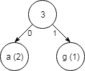
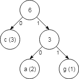
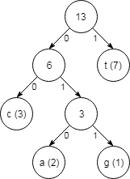

Licenca
To delo je na voljo pod pogoji slovenske licence Creative Commons 2.5:
priznanje avtorstva - nekomercialno - deljenje pod enakimi pogoji.
Celotna licenca je na voljo na spletu na naslovu http://creativecommons.org/licenses/by-nc-sa/2.5/si/. V skladu s to licenco je dovoljeno vsakemu uporabniku delo razmnoževati, distribuirati, javno priobčevati, dajati v najem in tudi predelovati, vendar samo v nekomercialne namene in ob pogoju, da navede avtorja oziroma avtorje in izdajatelja tega dela. Če uporabnik delo predela, kar pomeni, da ga spremeni, preoblikuje, prevede ali uporabi to delo v svojem delu, lahko predelavo dela ponudi na voljo le pod pogoji, ki so enaki pogojem iz te licence oziroma pod enako licenco.

Huffmanovo kodiranje
Drevo po Huffmanovem algoritmu začnemo graditi tako, da najprej preštejemo pojavitve vsake posamezne črke (ali ugotovimo verjetnost pojavitve):
a: 2-krat c: 3-krat g: 1-krat t: 7-krat
Drevo gradimo z dna, tako da najprej poiščemo črki, ki se pojavita najmanj pogosto (v tem primeru sta to a in g). Ti dve črki predstavljata veji na dnu drevesa, v vrh drevesa, kjer se veji združita, pa vpišemo vsoto vrednosti obeh vej (2 + 1, kar je 3). Veji označimo z 0 in 1 (pri čemer vrstni red ni pomemben).

Nato pozabimo na število pojavitev obeh črk, ki smo ju pravkar združili, ampak namesto tega upoštevamo njuno vsoto ter postopek ponovimo: pojavitve med katerimi lahko izbiramo, so 3 (vsota pojavitev), 3 (pojavitev črke c) in 7 (pojavitev črke t). Združimo dve najmanjši vrednosti (3 in 3) ter razširimo drevo z novo vejo.

Sedaj nam ostaneta le še dve števili, ki ju moramo upoštevati (6 in 7), zato ju združimo v končno drevo.

Kodo vsake črke lahko prebereš tako, da slediš oznakam 0 in 1 od zgoraj navzdol ali pa drevo neposredno uporabiš za kodiranje.
Drugi učbeniki, kot primer pri Huffmanovem kodiranju, uporabljajo različna angleška besedila. V tem primeru črkama e in t priredijo krajši kodi, črkama z in q pa daljši kodi. Dokler se kode izračunajo po Huffmanovi metodi kombiniranja dveh najmanjših vrednosti, bo na koncu vedno nastala optimalna koda za dani primer.
Huffmanova drevesa niso zgrajena ročno - pravzaprav se Huffmanovo drevo zgradi vsakič, ko shraniš fotografijo v JPG obliki ali ZIP datoteki oziroma, če posnameš videoposnetek. S pomočjo spodnje interaktivne vaje lahko ustvariš lastna Huffmanova drevesa. Preizkusi nekaj različnih besedil, na primer takšno, ki vsebuje samo dve različni črki; takšno, kjer je vsaka črka enako pogosta; in takšno, kjer je ena črka veliko bolj pogosta kot druge.
Poizkusi izračunati Huffmanovo kodo za štiri črke a, b, c in d za vsako od naslednjih besedil: abcddcbaaabbccddcbdaabcd (vsaka črka je enako pogosta) in abaacbaabbbbaabbaacdadcd (črka "b" je veliko bolj pogosta).